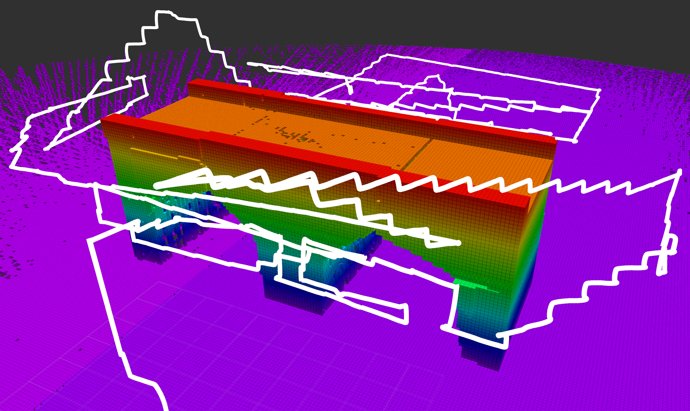

We study the problem of visual surface inspection of a bridge for defects using an Unmanned Aerial Vehicle (UAV). We do not assume that the geometric model of the bridge is known beforehand. Our planner, termed GATSBI, plans a path in a receding horizon fashion to inspect all points on the surface of the bridge. The input to GATSBI consists of a 3D occupancy map created online with LiDAR scans. Occupied voxels corresponding to the bridge in this map are semantically segmented and used to create a bridge-only occupancy map. Inspecting a bridge voxel requires the UAV to take images from a desired viewing angle and distance. We then create a Generalized Traveling Salesperson Problem (GTSP) instance to cluster candidate viewpoints for inspecting the bridge voxels and use an off-the-shelf GTSP solver to find the optimal path for the given instance. As the algorithm sees more parts of the environment over time, it replans the path to inspect novel parts of the bridge while avoiding obstacles. We evaluate the performance of our algorithm through high-fidelity simulations conducted in AirSim and real-world experiments. We compare the performance of GATSBI with a classical exploration algorithm. Our evaluation reveals that targeting the inspection to only the segmented bridge voxels and planning carefully using a GTSP solver leads to a more efficient and thorough inspection than the baseline algorithm.
We ran a simplified version of GATSBI in a real-world experiment setting. A mock bridge was constructed at University of Maryland's Fearless Flight Facility. In the experiment, the UAV was able to inspect all 15 of the bridge's inspecatble voxels.
We compare GATSBI against the baseline frontier exploration algorithm in percentage of bridge voxels inspected and total occupied voxels detected. While GATSBI isn't as quick to explore the environment as the baseline, it vastly outperforms the baseline in terms of inspection.
Simulation Flight
LiDAR Pointcloud
Occupancy Grid
Segmented PointCloud
Bridge Only Occupancy Grid
Comparison of GATSBI against the baseline frontier exploration method for bridge inspection. The image of the object can be seen by clicking on the model name.
| Bridge | Algorithm | Bridge Vox. | Inspected | Runtime |
|---|---|---|---|---|
| Arch | Frontier | 124 | 10 | 15.2 min |
| GATSBI | 124 | 44.8 min | ||
| Box Girder | Frontier | 140 | 11 | 13.2 min |
| GATSBI | 140 | 53.7 min | ||
| Covered | Frontier | 60 | 5 | 8.7 min |
| GATSBI | 60 | 69.3 min | ||
| Iron | Frontier | 167 | 6 | 8.4 min |
| GATSBI | 167 | 66.9 min | ||
| Steel | Frontier | 214 | 12 | 24.5 min |
| GATSBI | 214 | 77.3 min |
UAV flight path flown by GATSBI during inspection of the Arch bridge.
We compare GATSBI against the baseline frontier exploration algorithm in percentage of bridge voxels inspected and total occupied voxels detected. While GATSBI isn't as quick to explore the environment as the baseline, it vastly outperforms the baseline in terms of inspection.
Comparison of GATSBI against the baseline frontier exploration method for crack detection. The image of the object can be seen by clicking on the model name.
| Bridge | Algorithm | % Found | Std. Dev. |
|---|---|---|---|
| Arch | Frontier | 2.6% | 2.5% |
| GATSBI | 32.5% | 7.2% | |
| Box Girder | Frontier | 3.2% | 2.8% |
| GATSBI | 49.4% | 8.0% | |
| Covered | Frontier | 3.0% | 3.9% |
| GATSBI | 34.5% | 10.9% | |
| Iron | Frontier | 1.6% | 1.9% |
| GATSBI | 44.1% | 7.6% | |
| Steel | Frontier | 2.4% | 2.1% |
| GATSBI | 42.8% | 6.7% |
Receding horizon path planning for 3D exploration and surface inspection. Andreas Bircher, Mina Kamel, Kostas Alexis, Helen Oleynikova & Roland Siegwart. Autonomous Robots 2018.
Online coverage and inspection planning for 3D modeling. Soohwan Song, Daekyum Kim & Sungho Jo. Autonomous Robots 2020.
Exploration and Mapping with Groups of Robots: Recent Trends. Alberto Quattrini Li. Current Robotics Reports 2020.
{kind=link}
{kind=link}
{kind=link}
{kind=link}
{kind=link}